栅格 DataFrame / SQL 应用
Sedona SQL 在矢量之外也原生支持栅格数据。本教程使用同一份数据集，把它从加载、检视、可视化、处理、再次可视化到落盘走完一遍完整的流水线，让你能直接看到每一步产出的结果。其他格式、所有算子的速查、以及 Python 端的额外用法，放在文末的参考章节。
Note
Sedona 中所有栅格函数均使用从 1 开始的索引，唯一例外是 map algebra，它使用从 0 开始的索引。
Note
Sedona 假定地理坐标按经度/纬度顺序排列。若数据是 lat/lon 顺序，请使用 ST_FlipCoordinates 交换 X 与 Y。
Scala、Java、Python、R 等所有 Sedona 语言绑定都已支持栅格能力。本教程以 Python 为主语言进行示例，关键步骤会附上多语言切换标签。
配置依赖¶
- 阅读 Sedona Maven Central 坐标，并在 build.sbt 或 pom.xml 中添加 Sedona 依赖。
- 添加 Apache Spark core 与 Apache SparkSQL 依赖。
- 参考 SQL 示例项目。
- 阅读 快速开始 安装 Sedona Python。
- 本教程结构参考 Sedona SQL Jupyter Notebook 示例。
- 教程主线使用 NumPy 和 rasterio 合成输入场景：
pip install numpy rasterio。如果直接读取已有的 GeoTIFF，则无需安装 rasterio。
创建 SedonaContext¶
若你已经有 SparkSession（例如来自 Wherobots、AWS EMR 或 Databricks），可直接跳过此步并把它传入 SedonaContext.create。否则：
import org.apache.sedona.spark.SedonaContext
val config = SedonaContext.builder()
.master("local[*]") // 在集群上运行时请删除此行
.appName("rasterTutorial")
.getOrCreate()
val sedona = SedonaContext.create(config)
import org.apache.sedona.spark.SedonaContext;
SparkSession config = SedonaContext.builder()
.master("local[*]") // 在集群上运行时请删除此行
.appName("rasterTutorial")
.getOrCreate();
SparkSession sedona = SedonaContext.create(config);
from sedona.spark import SedonaContext
config = (
SedonaContext.builder()
.config(
"spark.jars.packages",
"org.apache.sedona:sedona-spark-shaded-3.3_2.12:1.9.0,"
"org.datasyslab:geotools-wrapper:1.9.0-33.5",
)
.getOrCreate()
)
sedona = SedonaContext.create(config)
sedona-spark-shaded-3.3 中的 3.3 替换为对应的 Spark 主.次版本号，例如 sedona-spark-shaded-3.4_2.12。
你也可以通过给 spark-submit 或 spark-shell 传入 --conf spark.sql.extensions=org.apache.sedona.sql.SedonaSqlExtensions 来注册 Sedona。
端到端教程¶
本教程贯穿一份 2 波段 GeoTIFF —— 一小块 AOI 上的红光与近红外反射率影像 —— 让它走完一条典型的栅格处理流水线。场景影像在 Python 中合成，因此整个示例可重复运行，仓库无需新增任何二进制数据。对真实的 Sentinel-2 切片，下面同样的 SQL 不用改一行就能跑，仅输入路径需要换一下。
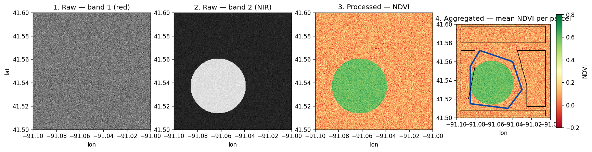
真实栅格长什么样
上面这套代码可处理任何符合 GeoTIFF 规范的数据。下面两个示例来自 Sedona 自带的测试资源：
| 3 波段彩色栅格 | 单波段栅格 |
|---|---|
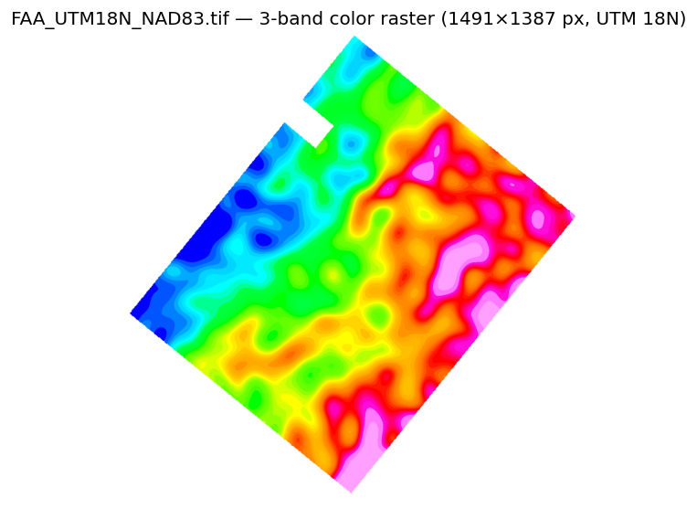 |
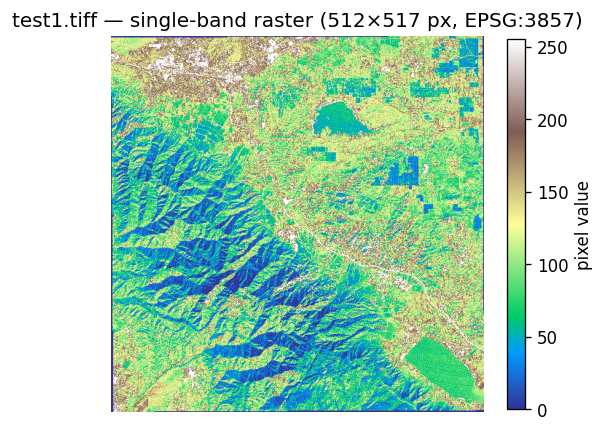 |
它们的 RS_NumBands(rast) 分别返回 3 和 1。RS_Band(rast, ARRAY(1,2,3))、RS_MapAlgebra 等波段级函数在两类栅格上用法一致。
1. 准备输入场景¶
合成一份 256 × 256 的栅格，其中包含一块圆形植被田。真实工作流跳过这一步，直接让 Sedona 读取磁盘或对象存储上已有的 GeoTIFF。
import os
import numpy as np
import rasterio
from rasterio.transform import from_bounds
WORK = "/tmp/sedona-raster-tutorial"
os.makedirs(WORK, exist_ok=True)
AOI = (-91.10, 41.50, -91.00, 41.60) # xmin, ymin, xmax, ymax，EPSG:4326
W = H = 256
transform = from_bounds(*AOI, W, H)
rng = np.random.default_rng(42)
ys, xs = np.mgrid[0:H, 0:W]
field = ((xs - 96) ** 2 + (ys - 160) ** 2) < 60**2 # 圆形植被田
red = (1500 + 200 * rng.standard_normal((H, W))).clip(0, 10000).astype("uint16")
nir = (1800 + 200 * rng.standard_normal((H, W))).clip(0, 10000)
nir = np.where(field, nir + 4000, nir).astype("uint16")
with rasterio.open(
f"{WORK}/scene.tif",
"w",
driver="GTiff",
tiled=True,
blockxsize=256,
blockysize=256,
height=H,
width=W,
count=2,
dtype="uint16",
crs="EPSG:4326",
transform=transform,
) as dst:
dst.write(red, 1)
dst.set_band_description(1, "red")
dst.write(nir, 2)
dst.set_band_description(2, "nir")
2. 使用 raster 数据源加载¶
raster 数据源可以加载 GeoTIFF 并自动将文件切成多个 tile。每一个 tile 在结果 DataFrame 中对应一行，Raster 类型保存于其中的一列。
// 把路径替换为 scene.tif 的实际位置，例如对象存储 URL。
val rasterDf = sedona.read.format("raster").load("/tmp/sedona-raster-tutorial/scene.tif")
rasterDf.createOrReplaceTempView("rasterDf")
rasterDf.show()
// 把路径替换为 scene.tif 的实际位置，例如对象存储 URL。
Dataset<Row> rasterDf = sedona.read().format("raster").load("/tmp/sedona-raster-tutorial/scene.tif");
rasterDf.createOrReplaceTempView("rasterDf");
rasterDf.show();
rasterDf = sedona.read.format("raster").load(f"{WORK}/scene.tif")
rasterDf.createOrReplaceTempView("rasterDf")
rasterDf.show()
+--------------------+---+---+----------+
| rast| x| y| name|
+--------------------+---+---+----------+
|GridCoverage2D["g...| 0| 0| scene.tif|
+--------------------+---+---+----------+
各列含义：
rast—— 栅格数据，Sedona 内置Raster类型。x、y—— 当前 tile 在源文件内的 0 基索引（仅在启用 retile 时出现）。name—— 源文件名。
256 × 256 的场景在这里恰好放在一个 tile 中，所以 DataFrame 只有一行。一份几 GB 的 GeoTIFF 则会产生很多行 —— 下游同一份 SQL 在两种情况下都能工作。
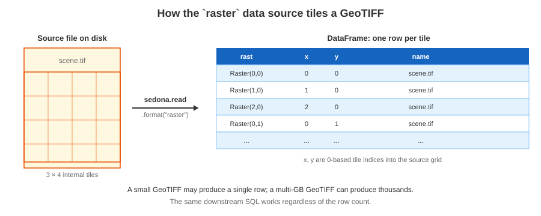
更多内容见下文的 加载选项：包括 tile 大小覆盖、目录递归读取、以及 NetCDF / Arc Grid 等非 GeoTIFF 格式。
3. 检视元数据¶
在做任何处理之前，先确认像素维度、地理参考与坐标系：
sedona.sql("""
SELECT RS_Width(rast) AS width,
RS_Height(rast) AS height,
RS_NumBands(rast) AS bands,
RS_SRID(rast) AS srid,
RS_GeoReference(rast) AS world_file
FROM rasterDf
""").show(truncate=False)
+-----+------+-----+----+----------------------------------------------------------+
|width|height|bands|srid|world_file |
+-----+------+-----+----+----------------------------------------------------------+
|256 |256 |2 |4326|0.000391\n0.000000\n0.000000\n-0.000391\n-91.099805\n41.599805|
+-----+------+-----+----+----------------------------------------------------------+
RS_MetaData 把同样的信息以单个数组返回：[upperLeftX, upperLeftY, width, height, scaleX, scaleY, skewX, skewY, srid, numBands]。
地理参考字段共同定义了从像素空间到世界坐标的仿射变换：
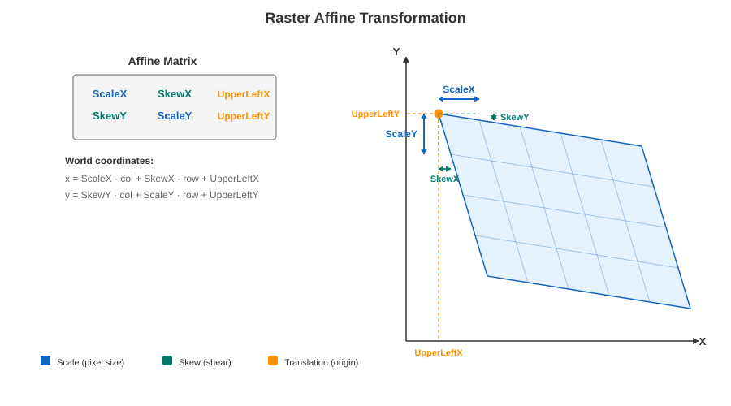
每个访问器的详细说明见 栅格元数据参考；运行时的像素—世界坐标互转使用 RS_PixelAsPoint 与 RS_WorldToRasterCoord。
4. 可视化原始栅格¶
先把两个波段渲染出来，看看处理前的输入是什么样子。SedonaUtils.display_image 在 Jupyter notebook 中会自动检测栅格列并就地渲染：
from sedona.spark import SedonaUtils
SedonaUtils.display_image(
sedona.sql("SELECT RS_Band(rast, ARRAY(1)) AS rast FROM rasterDf")
)
SedonaUtils.display_image(
sedona.sql("SELECT RS_Band(rast, ARRAY(2)) AS rast FROM rasterDf")
)
波段 1 是红光通道 —— 大体是没什么特征的裸地。波段 2 (NIR) 在植被田上明显变亮：
| 波段 1（红光） | 波段 2 (NIR) |
|---|---|
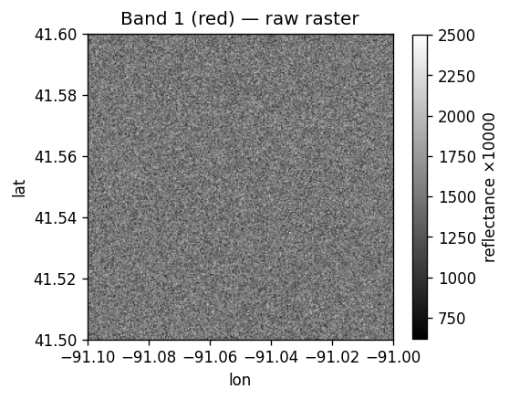 |
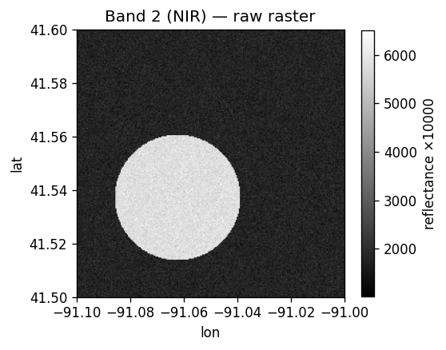 |
如果不在 notebook 环境，使用 RS_AsImage(rast, width) 得到 HTML <img> 标签，或者用 RS_AsBase64 得到任意图像查看器都能解码的 Base64 字符串。
5. 处理 —— 用 map algebra 计算 NDVI¶
归一化植被指数（NDVI）可以把活体植被从其他地物中分离出来：
NDVI = (NIR − Red) / (NIR + Red)
RS_MapAlgebra 在一个或多个波段上按像素运行一段脚本。输出类型 'D'（double）保留 NDVI 的负值范围：
ndviDf = sedona.sql("""
SELECT RS_MapAlgebra(
rast, 'D',
'out[0] = (rast[1] - rast[0]) / (rast[1] + rast[0] + 1e-6);'
) AS rast
FROM rasterDf
""")
ndviDf.createOrReplaceTempView("ndviDf")
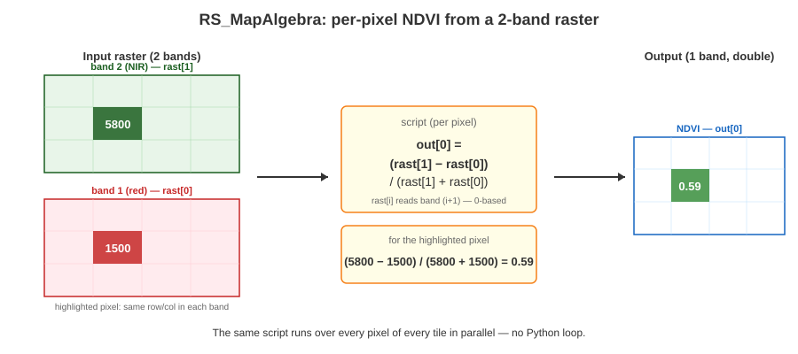
Map algebra 是最通用的处理原语 —— 裁剪、遮罩、阈值过滤、不同波段或不同栅格之间的算术运算，都可以用同样的 RS_MapAlgebra(rast, pixelType, script)（或双栅格版本）写出来。脚本语法见 Map algebra；其他备选算子（RS_Clip、RS_Resample、RS_SetValues）见下文的 栅格处理参考。
6. 可视化处理结果¶
NDVI 栅格让植被田一目了然：NDVI 高的像素显示为绿色，其余为淡红色。
SedonaUtils.display_image(ndviDf)
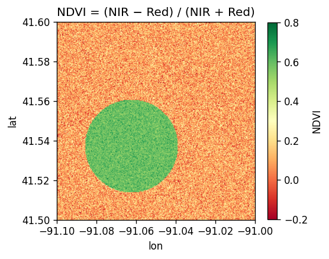
7. 使用分区统计聚合到矢量区域¶
逐像素的 NDVI 很少是最终的可交付成果。真正想回答的问题往往是「哪一块*区域*变绿了？」—— 哪个农业地块、哪个普查区、哪个流域。RS_ZonalStats(raster, zone, statType) 就是栅格 → 矢量聚合的规范函数：落在区域多边形内的每个像素都会贡献到该统计值上。
真实的地块边界往往是不规则的 —— 形状各异的田地、地块之间留出的道路与地役权间隙、不属于任何区域的留白。下面在 AOI 上手绘 5 个地块：
from pyspark.sql import Row
parcels = sedona.createDataFrame(
[
Row(
parcel_id="Orchard",
wkt="POLYGON((-91.085 41.515, -91.045 41.510, -91.030 41.530, "
"-91.040 41.560, -91.075 41.572, -91.085 41.555, -91.085 41.515))",
),
Row(
parcel_id="EastFarm",
wkt="POLYGON((-91.025 41.512, -91.005 41.512, -91.005 41.572, "
"-91.035 41.572, -91.025 41.535, -91.025 41.512))",
),
Row(
parcel_id="WestFarm",
wkt="POLYGON((-91.095 41.520, -91.087 41.520, -91.080 41.555, "
"-91.080 41.572, -91.095 41.572, -91.095 41.520))",
),
Row(
parcel_id="NorthBlock",
wkt="POLYGON((-91.095 41.580, -91.005 41.580, -91.005 41.598, "
"-91.095 41.598, -91.095 41.580))",
),
Row(
parcel_id="SouthStrip",
wkt="POLYGON((-91.095 41.502, -91.005 41.502, -91.005 41.508, "
"-91.095 41.508, -91.095 41.502))",
),
]
).selectExpr("parcel_id", "ST_GeomFromText(wkt) AS geom")
parcels.createOrReplaceTempView("parcels")
ranked = sedona.sql("""
SELECT p.parcel_id,
ROUND(RS_ZonalStats(n.rast, p.geom, 'mean'), 4) AS mean_ndvi
FROM parcels p, ndviDf n
ORDER BY mean_ndvi DESC
""")
ranked.show()
+----------+---------+
| parcel_id|mean_ndvi|
+----------+---------+
| Orchard| 0.4213|
| WestFarm| 0.1182|
|NorthBlock| 0.0925|
| EastFarm| 0.0907|
|SouthStrip| 0.0905|
+----------+---------+
不规则形状的 Orchard 地块明显胜出 —— 它正好覆盖了植被田。落在地块缝隙里的像素（道路、未登记土地）不属于任何区域，对所有统计值都没有影响。
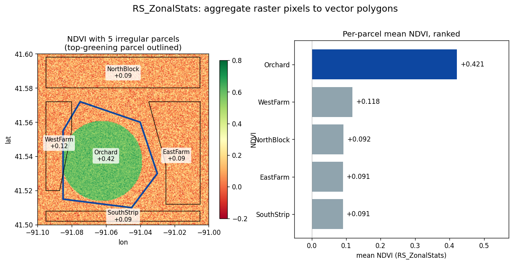
Note
当输入栅格被分成多个 tile 时，parcels × ndviDf 的笛卡尔连接会产生每个 (parcel, tile) 一行的结果。要在 tile 之间正确聚合，应该按 tile 先算 sum 与 count，再 GROUP BY parcel_id 用 SUM(sum) / SUM(count) 汇总。思路相同，只是多加一层聚合。RS_ZonalStatsAll 可以在一次调用里返回所有常用统计量。
8. 写回磁盘¶
写出栅格分两步：先用 RS_AsXXX 把 Raster 列转成二进制，再把这个二进制 DataFrame 交给 Sedona 的 raster writer。
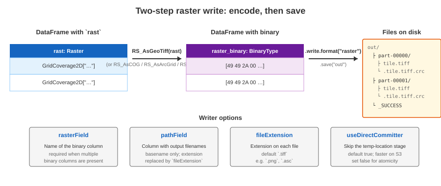
import org.apache.spark.sql.functions.expr
ndviDf.withColumn("raster_binary", expr("RS_AsGeoTiff(rast)"))
.write.format("raster").mode("overwrite").save("/tmp/sedona-raster-tutorial/ndvi_out")
from pyspark.sql.functions import expr
(
ndviDf.withColumn("raster_binary", expr("RS_AsGeoTiff(rast)"))
.write.format("raster")
.mode("overwrite")
.save(f"{WORK}/ndvi_out")
)
输出目录中，每一行对应一个 part 子目录中的一个文件，再加上 Spark 的 _SUCCESS 标记。读回方式：
roundtrip = sedona.read.format("raster").load(f"{WORK}/ndvi_out/*/*.tiff")
roundtrip.selectExpr("RS_Width(rast) AS w", "RS_Height(rast) AS h").show()
完整的 writer 选项（rasterField、pathField、fileExtension、useDirectCommitter）与可选的二进制格式（RS_AsGeoTiff、RS_AsCOG、RS_AsArcGrid、RS_AsPNG）见下文 写出栅格参考。
下面是参考材料：其他加载方式、按用途分组的所有栅格算子、以及在 Python 端处理已收集 SedonaRaster 对象的用法。
加载选项¶
Tile 大小覆盖¶
raster 数据源默认使用 GeoTIFF 自身的内部 tile 方案。推荐使用 Cloud Optimized GeoTIFF（COG）作为源格式，因为它本身就把像素按方形 tile 组织。要显式覆盖 tile 设置：
| 选项 | 默认值 | 说明 |
|---|---|---|
retile |
true |
是否进行 tile 切分。设为 false 时每个文件作为单行加载。 |
tileWidth |
源文件内部的 tile 宽度 | 覆盖每个 tile 的宽度（像素）。 |
tileHeight |
若已设置 tileWidth，则同其 |
覆盖每个 tile 的高度（像素）。 |
padWithNoData |
false |
当右侧/底部边缘的 tile 小于指定尺寸时，是否用 NODATA 值填充。 |
rasterDf = (
sedona.read.format("raster")
.option("tileWidth", "256")
.option("tileHeight", "256")
.load("/some/path/*.tif")
)
Note
若文件内部布局不适合 tile 切分，数据源会报错。可通过 option("retile", "false") 禁用，或显式指定 tile 尺寸；更彻底的做法是用 gdal_translate 把文件重写为 COG。
按目录与 glob 加载¶
raster 数据源支持 Spark 通用的文件源选项：
rasterDf = (
sedona.read.format("raster")
.option("recursiveFileLookup", "true")
.option("pathGlobFilter", "*.tif*")
.load("/path/to/raster_folder")
)
Tip
如果加载路径以 / 结尾，会自动开启递归扫描 —— 相当于设置了 recursiveFileLookup=true。
非 GeoTIFF 格式（NetCDF、Arc Grid）¶
对 GeoTIFF 以外的格式，使用 Spark 的 binaryFile 数据源加上 Sedona 的栅格构造器。
rawDf = sedona.read.format("binaryFile").load("/path/to/file.asc")
rawDf.createOrReplaceTempView("rawdf")
然后把 content 列提升为 Raster：
| 构造器 | 源格式 |
|---|---|
RS_FromGeoTiff(content) |
GeoTIFF（也可通过上述 raster 数据源直接读） |
RS_FromArcInfoAsciiGrid(content) |
Arc Info ASCII Grid |
RS_FromNetCDF(...) |
NetCDF |
SELECT RS_FromArcInfoAsciiGrid(content) AS rast,
modificationTime, length, path
FROM rawdf
栅格元数据参考¶
| 函数 | 返回内容 |
|---|---|
RS_MetaData(rast) |
上述所有字段，以单个数组返回 |
RS_Width(rast)、RS_Height(rast) |
像素维度 |
RS_NumBands(rast) |
波段数 |
RS_SRID(rast) |
坐标参考系（EPSG 代码） |
RS_GeoReference(rast, format) |
world file（GDAL 或 ESRI 风格） |
RS_UpperLeftX(rast)、RS_UpperLeftY |
左上角世界坐标 |
RS_ScaleX(rast)、RS_ScaleY |
每像素对应的世界坐标尺寸 |
栅格处理参考¶
教程主线使用 RS_MapAlgebra 计算 NDVI。完整的算子集合：
坐标转换¶
RS_PixelAsPoint(rast, col, row)—— 像素 → 世界坐标。RS_WorldToRasterCoord(rast, x, y)—— 世界坐标 → 像素（只取单轴时用RS_WorldToRasterCoordX/Y）。
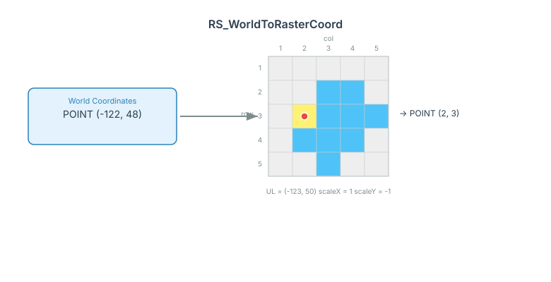
像素操作¶
RS_Values(rast, points)—— 在一组点几何处采样像素值。RS_SetValues(rast, band, x, y, width, height, values)—— 覆写一个矩形像素块。
波段操作¶
RS_Band(rast, bands)—— 选取部分波段构造新栅格。RS_AddBand(target, source, srcBand, dstBand)—— 在两个栅格之间复制波段。
重采样与裁剪¶
RS_Resample(rast, scaleX, scaleY, gridX, gridY, useScale, method)—— 改变像元尺寸或将栅格对齐到目标网格，支持最近邻、双线性、双立方插值。RS_Clip(rast, band, geom)—— 按多边形裁剪。RS_ReprojectMatch—— 将一个栅格重采样到另一个栅格的网格与坐标系上：
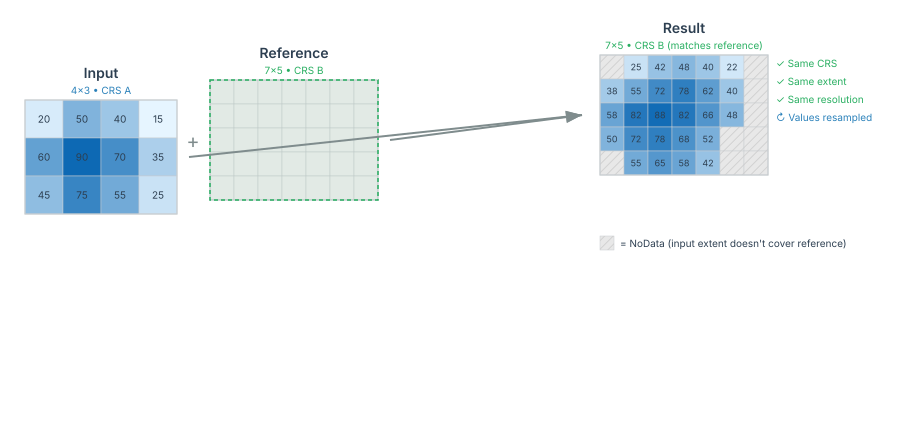
Map algebra¶
RS_MapAlgebra 有两种形式：
- 单栅格 ——
RS_MapAlgebra(rast, pixelType, script)。对单个栅格的多个波段按像素运行脚本。教程主线即使用此形式。 - 双栅格 ——
RS_MapAlgebra(rast0, rast1, pixelType, script, noDataValue)。对两个栅格按像素运行脚本，常用于差分栅格与变化检测。
-- 双栅格：用一个 NDVI 减去另一个
SELECT RS_MapAlgebra(a.rast, b.rast, 'D',
'out[0] = rast0[0] - rast1[0];', -9999.0) AS delta
FROM ndvi_after a JOIN ndvi_before b ON a.x = b.x AND a.y = b.y
栅格与矢量互通¶
几何栅格化¶
RS_AsRaster 将矢量几何渲染到栅格网格上：
SELECT RS_AsRaster(
ST_GeomFromWKT('POLYGON((150 150, 220 260, 190 300, 300 220, 150 150))'),
RS_MakeEmptyRaster(1, 'b', 4, 6, 1, -1, 1),
'b', 230
)

空间过滤与连接¶
栅格谓词既可用于 WHERE 子句，也可作为连接条件：
-- 范围查询：保留与 AOI 相交的 tile
SELECT rast FROM rasterDf
WHERE RS_Intersects(rast, ST_GeomFromWKT('POLYGON((0 0, 0 10, 10 10, 10 0, 0 0))'))
-- 空间连接：把每个 tile 与覆盖到它的矢量要素配对
SELECT r.rast, g.geom
FROM rasterDf r JOIN geomDf g ON RS_Intersects(r.rast, g.geom)
RS_Intersects 与其他 栅格谓词 都基于栅格的空间外包做判断。
分区统计¶
教程主线使用 RS_ZonalStats(raster, zone, statType) 配合 'mean'。同一函数还支持 'sum'、'count'、'min'、'max'、'stddev'。如需一次拿到所有标准统计量，使用 RS_ZonalStatsAll，它对每个区域返回一个 struct，包含全部统计字段。
可视化参考¶
除教程主线使用的 SedonaUtils.display_image 与 RS_AsImage 之外：
RS_AsBase64(rast)—— 编码为 Base64 字符串，便于嵌入或使用 在线解码器 查看。RS_AsMatrix(rast)—— 把底层像素网格渲染成文本矩阵（适合小尺寸栅格或调试场景）。
完整列表见 栅格输出函数。
写出栅格参考¶
教程使用的两步写出流程支持以下四种输出格式：
| 函数 | 格式 | 适用场景 |
|---|---|---|
RS_AsGeoTiff |
GeoTIFF | 通用格式，可选压缩 |
RS_AsCOG |
Cloud Optimized GeoTIFF | 对象存储 + 高效 range read |
RS_AsArcGrid |
Arc Info ASCII Grid | 单波段、文本格式 |
RS_AsPNG |
PNG | 仅用于显示，像素类型必须为无符号整数 |
raster writer 支持以下选项：
| 选项 | 默认值 | 说明 |
|---|---|---|
rasterField |
schema 中最后一个 binary 列 |
要写出的二进制列名。当 DataFrame 中存在多个二进制列时建议显式设置。 |
fileExtension |
.tiff |
输出文件扩展名（例如 .png、.asc）。 |
pathField |
无 | 提供输出文件名的列。仅使用文件 basename，已有扩展名会被 fileExtension 替换。未设置时每个文件以随机 UUID 命名。 |
useDirectCommitter |
true |
直接写入目标位置。设为 false 时先写到临时位置，速度较慢，尤其在 S3 等对象存储上。 |
设置所有选项的完整示例：
import org.apache.spark.sql.functions.expr
rasterDf.withColumn("raster_binary", expr("RS_AsGeoTiff(rast)"))
.write.format("raster")
.option("rasterField", "raster_binary")
.option("pathField", "name")
.option("fileExtension", ".tiff")
.mode("overwrite")
.save("my_raster_file")
from pyspark.sql.functions import expr
(
rasterDf.withColumn("raster_binary", expr("RS_AsGeoTiff(rast)"))
.write.format("raster")
.option("rasterField", "raster_binary")
.option("pathField", "name")
.option("fileExtension", ".tiff")
.mode("overwrite")
.save("my_raster_file")
)
输出目录结构：
my_raster_file
├── part-00000-…-c000
│ ├── test1.tiff
│ └── .test1.tiff.crc
├── part-00001-…-c000
│ ├── test2.tiff
│ └── .test2.tiff.crc
└── _SUCCESS
使用同一 raster 数据源读回：
rasterDf = sedona.read.format("raster").load("my_raster_file/*/*.tiff")
在 Python 中处理栅格 DataFrame¶
自 v1.6.0 起，可以把含栅格列的 DataFrame 拉到 Python driver 端本地处理。被收集回的栅格元素表现为 SedonaRaster 对象。
Tip
在 Jupyter 中若只是想快速可视化栅格，优先使用 SedonaUtils.display_image(df)，无需 collect。
df_raster = (
sedona.read.format("raster").option("retile", "false").load("/path/to/raster.tif")
)
rows = df_raster.collect()
raster = rows[0].rast
raster # <sedona.raster.sedona_raster.InDbSedonaRaster at 0x…>
SedonaRaster 通过 Python 属性暴露元数据：
raster.width
raster.height
raster.affine_trans
raster.crs_wkt
像素数据以 NumPy 数组形式提供（CHW 排列）：
raster.as_numpy() # ndarray
raster.as_numpy_masked() # ndarray，NODATA 被掩码为 NaN
需要与 rasterio（>= 1.2.10）互操作时：
ds = raster.as_rasterio() # rasterio.DatasetReader
band1 = ds.read(1)
在栅格上编写 Python UDF¶
Python UDF 接收栅格数据，使用 NumPy / SciPy / scikit-learn 等处理，并返回标量或新栅格。
栅格 → 标量¶
UDF 可接收 SedonaRaster 输入并返回任意 Spark 数据类型。下面的 UDF 计算栅格均值：
from pyspark.sql.types import DoubleType
def mean_udf(raster):
return float(raster.as_numpy().mean())
sedona.udf.register("mean_udf", mean_udf, DoubleType())
df_raster.withColumn("mean", expr("mean_udf(rast)")).show()
+--------------------+------------------+
| rast| mean|
+--------------------+------------------+
|GridCoverage2D["g...|1542.8092886117788|
+--------------------+------------------+
栅格 → 栅格¶
UDF 也可以返回栅格对象。使用 SedonaRaster.with_bands() 替换像素数据，同时保留所有空间元数据（CRS、仿射变换、NODATA 等）。波段数与 dtype 可自由变化。
import numpy as np
from sedona.spark.sql.types import RasterType
def mask_udf(raster):
band1 = raster.as_numpy()[0, :, :]
mask = (band1 < 1400).astype(np.float32)
return raster.with_bands(mask) # 1 个波段，保留 CRS / 仿射变换 / NODATA
sedona.udf.register("mask_udf", mask_udf, RasterType())
df_raster.withColumn("mask_rast", expr("mask_udf(rast)")).show()
+--------------------+--------------------+
| rast| mask_rast|
+--------------------+--------------------+
|GridCoverage2D["g...|GridCoverage2D["g...|
+--------------------+--------------------+
with_bands() 接受 NumPy 数组：CHW 顺序（波段 × 高 × 宽），或单波段输出时的 HW 顺序（高 × 宽）。返回的 SedonaRaster 携带全部原始元数据，UDF 返回时会自动序列化回 JVM 端。
性能优化¶
处理大体量栅格时，可参考 将栅格几何以 Parquet 形式存储 的分区与持久化建议。